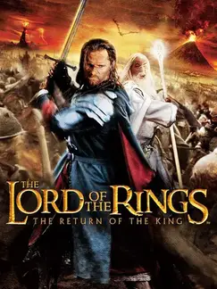

 |
|
| Tiempo de juego | 28m 45s |
| Última actividad | 11/11/2025 8:03:46 |
| Añadido | 27/7/2025 1:23:36 |
| Modificado | 3/12/2025 18:33:01 |
| Estado de finalización | Jugado |
| Librería | Playnite |
| Fuente | |
| Plataforma | PC (Windows) |
| Fecha de lanzamiento | 31/10/2003 |
| Puntuación de la Comunidad | 76 |
| Puntuación de la Crítica | 75 |
| Puntuación de usuario | |
| Género | Adventure Hack and slash/Beat 'em up |
| Desarrollador | EA Redwood Shores |
| Editor | Aspyr Media Electronic Arts |
| Característica | Co-Operative Multiplayer Single Player |
| Enlaces | |
| Tag | |
En un tiempo donde los juegos basados en películas eran sinónimo de basura, EA Redwood Shores (los mismos que después harían Dead Space) se pusieron las pilas y nos regalaron una joya. The Return of the King no era "el juego de la peli"; era LA peli hecha videojuego. Una obra maestra del hack and slash que te ponía en medio del quilombo de la Tierra Media como nunca antes se había hecho.
Este juego te agarraba y te tiraba de cabeza a las batallas más zarpadas y épicas de la película. Defender las murallas de Minas Tirith, pelear contra los olifantes en los Campos del Pelennor, enfrentarte a Ella-Laraña, abrirte paso por la Puerta Negra... todo estaba ahí. El juego mezclaba escenas de la película con la jugabilidad de una forma tan perfecta que te sentías un protagonista más de la historia.
Y no era solo apretar botones a lo loco. Tenía un sistema de combate y progresión genial. A medida que masacrabas orcos, ganabas experiencia para comprar combos nuevos y devastadores para cada personaje. Ver a Legolas tirar flechas como una ametralladora o a Aragorn reventando todo con la Andúril era una satisfacción total.
Podías seguir el camino del Rey (Aragorn, Legolas, Gimli), el del Mago (Gandalf) o el de los Hobbits (Frodo y Sam), cada uno con sus propias misiones y estilo de juego. Y encima, tenía un modo cooperativo local que era una fiesta absoluta. Jugarlo de a dos con un amigo en el mismo sillón era la gloria.
Es, sin lugar a dudas, uno de los mejores juegos basados en una película que se han hecho jamás. Pura acción, épica por todos lados y un respeto por el material original que ya no se ve. Un juegazo que envejeció como los buenos vinos.